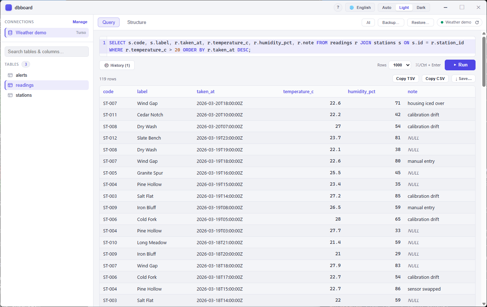
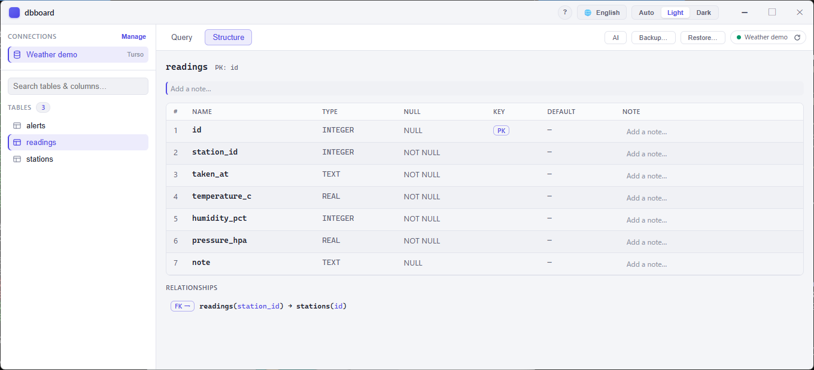
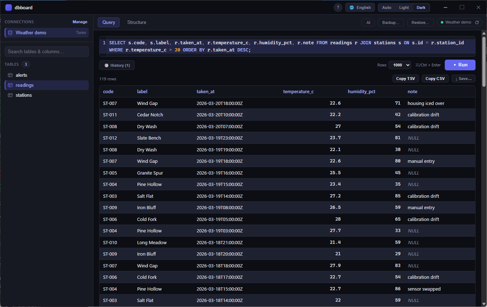
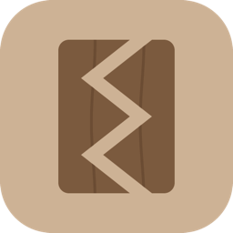

Turso, D1, Aurora DSQL —
a different tool for every one of them.
One window for ten engines: those three plus PostgreSQL, CockroachDB,
Neon, Supabase, MySQL/MariaDB, and the document stores
Cloud Firestore and MongoDB.
Same editor, same grid, same export, whichever one you opened.

NULL rather than as
nothing, so a missing value never reads as an empty string — and the
JSON export keeps that distinction in the file, where CSV can only
write an empty field for both.
Windows 10+ and macOS 13+ · MIT ·
A look around


Compare two databases
Pick a second connection on the same engine and dbboard lists what the two schemas disagree about: tables one side has and the other does not, columns that differ in type, nullability or default, primary keys that do not match, foreign keys that point somewhere else, and indexes that are missing, built over different columns, or unique on only one side. Only what differs is listed, so three hundred tables with one difference give you one line.
Types are compared exactly as each engine spells them —
VARCHAR(255) and varchar are reported as
different even where they may well mean the same thing. A second look
costs you a moment; a missed difference costs you the migration. Two
connections on different engines are refused rather than guessed at.
Queries worth keeping, and tables that do not stop at row 100
The editor has always remembered what you ran, but that list is
disposable on purpose. Name a query instead and it stays — per
connection, one click to put it back — kept in
saved-queries.toml beside your connections rather than in
the window's own storage, which "clear site data" empties and no
settings backup includes.
Browsing a table pages through all of it. The pages are keyed rather than counted, resuming strictly after the previous page's last row, so a row inserted while you read cannot make another appear twice or vanish between pages — and no page costs more than the first.
Previous versions
| Version | Windows | macOS |
|---|
Rolling back is supported, and your connections survive it.
If a release does not work for you, install the last one that did — the
list above is there for exactly that. The first time each build runs it
copies connections.toml aside as
connections.pre-<version>.toml before touching
anything, so going back finds a file that version can certainly read.
Verify your download
Every release ships a SHA256SUMS.txt covering all
artifacts. Compare your download against it before running:
# Linux / macOS sha256sum -c SHA256SUMS.txt # Windows PowerShell (Get-FileHash .\dbboard-desktop_0.17.0_x64-setup.exe -Algorithm SHA256).Hash
Use it from an AI agent
dbboard also ships dbboard-mcp, a headless
MCP server that hands the
connections you have already configured to an AI agent as a tool surface
over stdio. Reading is always on; writing stays off until you opt a
connection in, and privilege changes, TRUNCATE and
DROP are blocked either way. It reuses the same
connections.toml and OS keychain the app uses, so it adds no
new place to keep credentials, and secrets never cross the wire.
An agent handed this server can ask it what it is: the about
tool answers what the product is for, which build is replying, which
engines it speaks, and what each released version changed. It reaches no
connection, no database and no file of yours — the answer is compiled
into the binary, so it describes the build that is answering rather than
whatever happens to sit on disk beside it.
It is a separate download from the app above — grab
dbboard-mcp-windows-x86_64.exe or
dbboard-mcp-macos-universal from the
latest
release, put it somewhere stable, then register it in one line:
# Windows (PowerShell) claude mcp add dbboard --scope user -- "$env:LOCALAPPDATA/dbboard/dbboard-mcp.exe" # macOS claude mcp add dbboard --scope user -- "$HOME/.local/bin/dbboard-mcp"
Better with its siblings

sshboard — you and your agent, on one SSH session
The same idea as dbboard, applied to the server instead of the
database. Your agent gets no run_command hole to work in
somewhere you cannot see: it shares the session you are watching, and
what it runs appears in your console as it happens.
They are meant to be used together. Plenty of systems are still released by hand — someone opens an SSH session, copies files up, then opens a client and runs the migration. There is no pipeline to give an agent, and building one is its own project. Between the two, the halves are covered: sshboard puts the files where they go, dbboard runs what has to run against the database. The agent does the steps; you are in the room for all of them, on both sides.

warifu — people and agents in one conversation
Peer to peer, with no central account and no server to run. You hand someone a key and that key is what lets them in — the name is the old tally stick, split in two so the halves prove each other. Where dbboard and sshboard are about watching one agent work, this is about several people and several agents being in the same room at all.
Before you run it
These binaries are not code-signed, by decision rather than by omission: a signing certificate is a recurring purchase this project does not make. Windows SmartScreen may warn about an "unknown publisher", and macOS Gatekeeper will ask you to confirm opening an app from an unidentified developer. Both warnings are expected on every release — verify the checksum above, then allow it through.